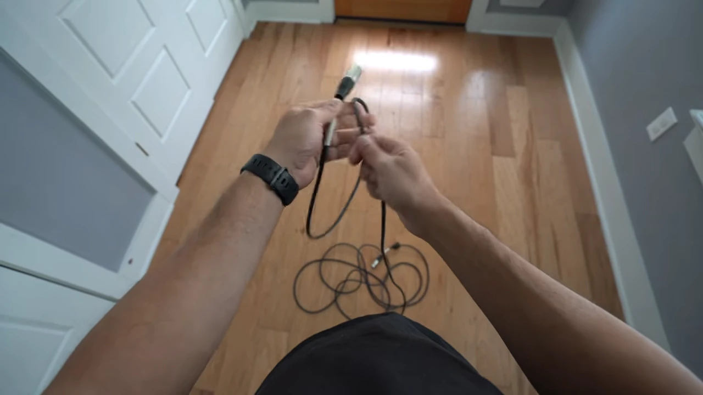
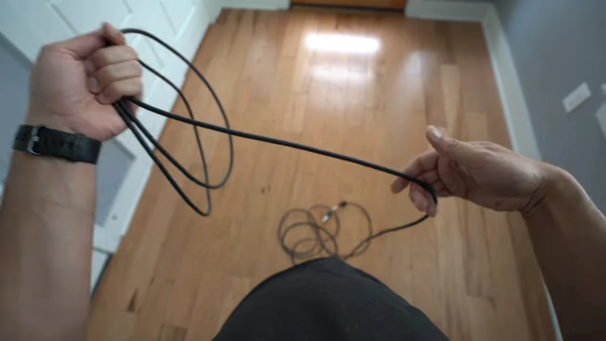
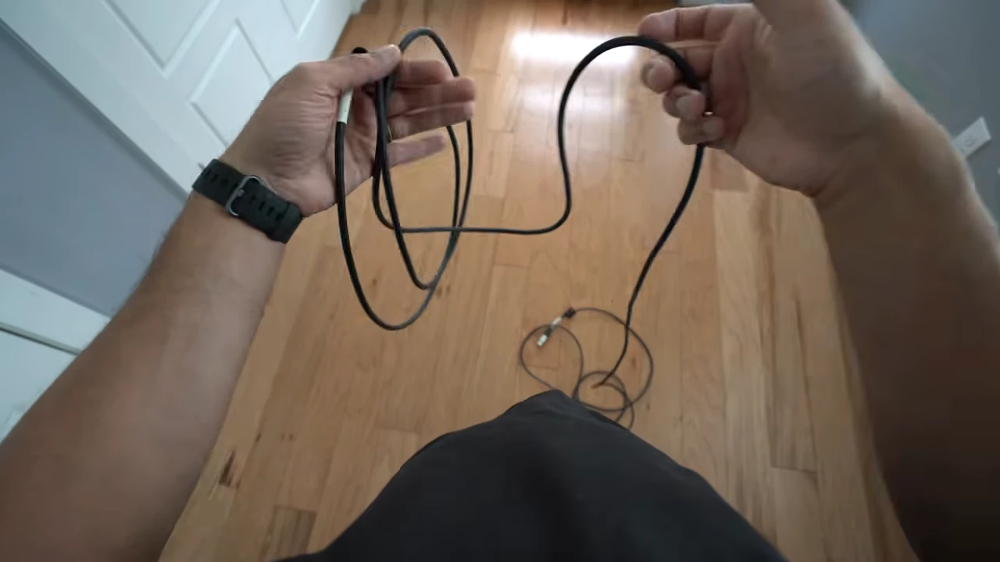
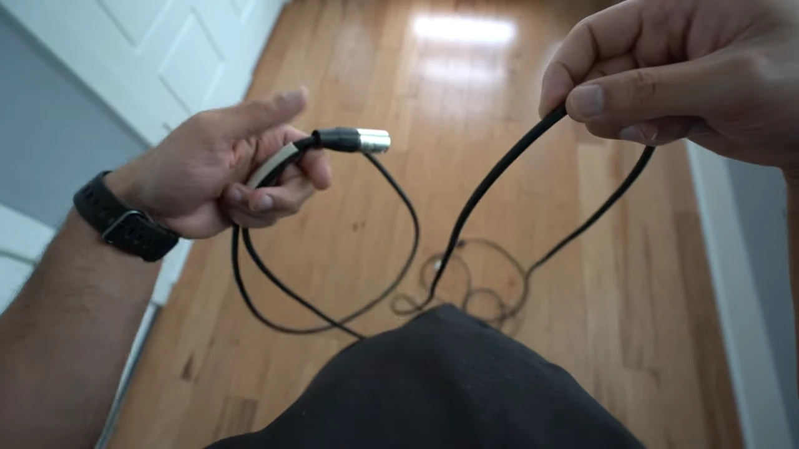
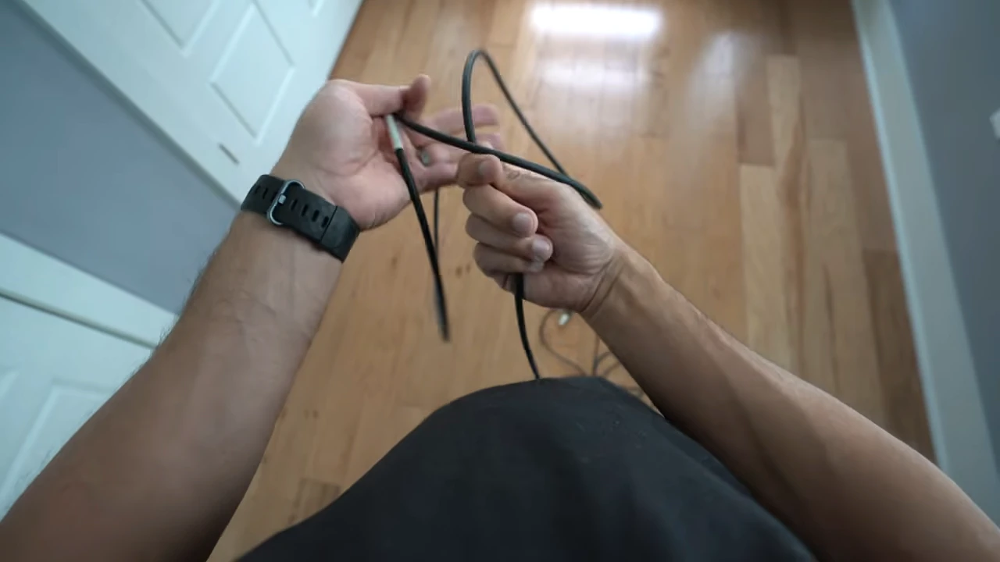
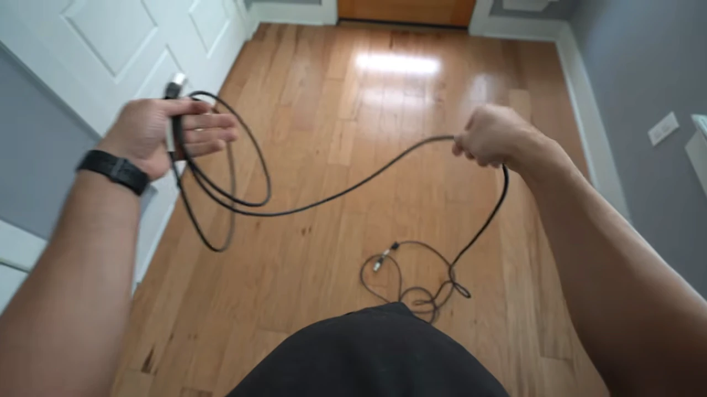
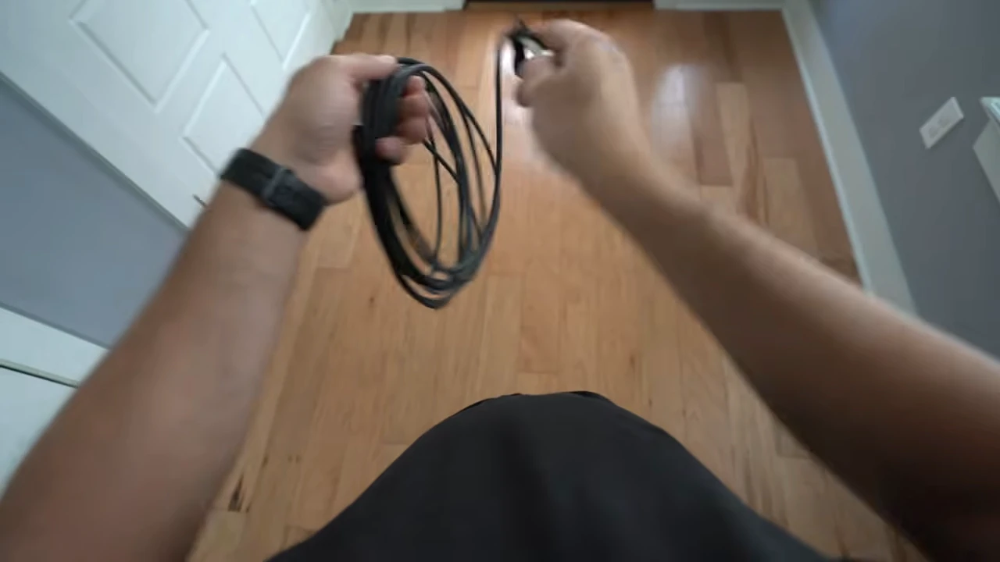
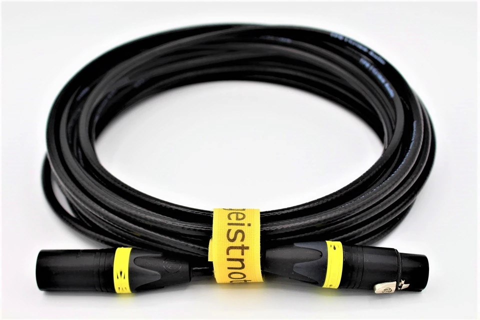

操作 01 / 08
斷開與檢查
停止錄音、靜音；關閉 48V 並依原廠指示等待，再握接頭拔線。
兩端斷開，確認外皮與接頭完好。
跟著自己的左右手，觀察取線、翻腕與交圈。
左手持圈、右手取線。點選步驟，圖片可開啟放大。
操作 01 / 08
停止錄音、靜音；關閉 48V 並依原廠指示等待，再握接頭拔線。
兩端斷開，確認外皮與接頭完好。
操作 02 / 08
把線慢慢放開，解開交叉與打結，讓自由端釋放扭轉。
遇到卡住就停，不用力拉。
操作 03 / 08
左手持圈；右手同向握線，順勢帶回，把圈頂交給左手。
圈要圓順，手不要夾太緊。

操作 04 / 08
右手反向握線，翻腕帶回，形成反圈後交給左手。
只換右手手勢，不翻整束線、不把接頭穿圈。




操作 05 / 08
重複 Over → Under，保持圈徑一致。
哪一圈歪了，就退回重做。


操作 06 / 08
整理好兩端線頭，用可退式束帶環住線束一側。
收緊到不散開即可；保留帶尾，按壓卡榫可退出。
操作 07 / 08
按壓束帶卡榫、退出帶尾，再從外側線端逐圈放開。
接頭不穿圈，也不甩線。
操作 08 / 08
沿場地邊緣走線，接頭旁留活動餘裕，避開門縫與輪子。
跨通道要護線；接妥後檢查訊號。
一般柔軟的 XLR／TRS／TS 適用；光纖、多芯線與領夾麥克風細線，依原廠方式收納。
接頭留在圈外，根部保留自然弧度。
各自留在原本出線的一側，不把接頭穿過圈心來湊齊。
接頭根部不急折，尾段不打結，也不繞整束線。
用可退式束帶環住一側，不勒接頭或壓扁外皮。
照片用來觀察線頭位置；實作綁線使用可退式束帶。

收緊到線束不散開即可，保留帶尾供下次退出。
環住線束一側，將帶尾穿入鎖頭。
讓線圈維持整束，不把外皮勒出凹痕。
按住釋放卡榫，將帶尾退回；不用剪斷。